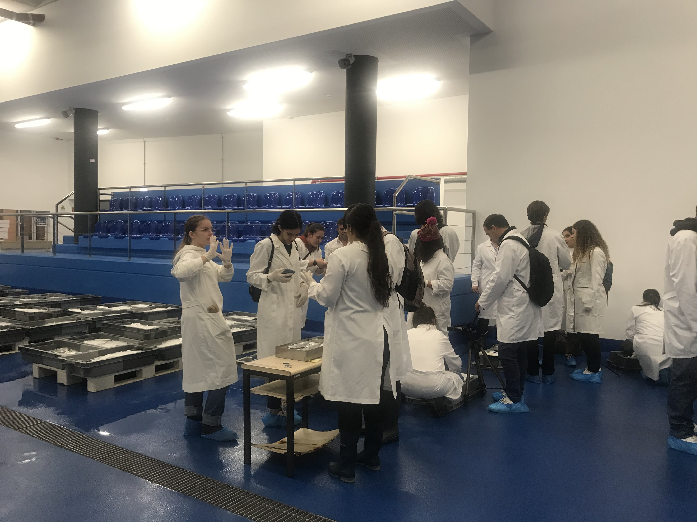

Field work
Biosystematics
As part of the Biosystematics subject of the 1st year of the Biology Course at the University of Madeira, the students went to the Lota do Funchal (Regional Directorate of Fisheries) where they took photographs of fish of different species to analyze their body shape.



As part of the Zoology I course unit, some fieldwork was carried out on October 12th. In this activity, Dr. Rodrigo Riera,
Professor at the Universidad de Las Palmas de Gran Canaria and partner in the LAPACOM Project gave a small lecture and showed how to sample epifauna from algae.
Field work
Zoology I